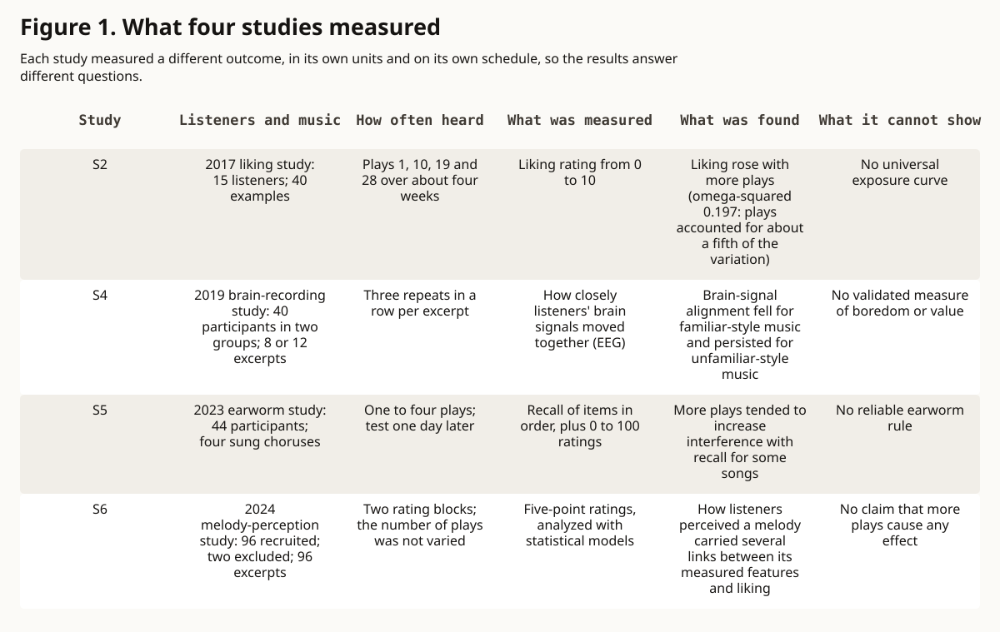

evidence essay · music-listening
The Second Hearing
A second hearing changes the listener's evidence, but no single measure can turn exposure into a verdict on taste or artistic value.
Question. What does repeated listening change, and what can it never establish on its own?
Finding. Exposure can raise familiarity and sometimes liking, while attention, recognition, memory interference, and perceived unpredictability follow different paths.
Evidence. Seven studies spanning controlled exposure, naturalistic listening, EEG, memory, neuroimaging synthesis, perceptual modeling, and categorization show why those outcomes must remain separate.
Limit. The studies use different listeners, stimuli, schedules, and units. Together they do not define a universal exposure curve or explain any one person's taste.
The second hearing is a new measurement
A recording may be unchanged when it plays again, but the listener now carries a trace of the first encounter. A rhythm may be easier to follow. A phrase may become predictable. An unfamiliar texture may gain a name. The repeat therefore changes the conditions of listening even when it does not change the sound file.
That observation is a frame, not a neuroscience claim. The evidence becomes useful only after the outcome is named. Liking, recognition, shared neural timing, later memory interference, and perceived unpredictability are different measurements. A change in one cannot stand in for a change in all the others.
Four different forms of familiarity
The four forms are piece familiarity, style familiarity, within-piece repetition, and across-hearing repetition. Piece familiarity means prior exposure to the exact recording or composition. Style familiarity means learned expectations from related music, even when the piece is new. Within-piece repetition is the return of a rhythm, phrase, chorus, timbre, or form during one hearing. Across-hearing repetition is another encounter with the same excerpt or piece.
These distinctions matter because a new piece can belong to a familiar style, while a repeatedly heard piece can remain hard to predict. The 2017 naturalistic study found that familiarity with similar music was a strong predictor of liking even though the selected examples were initially unknown to participants. The 2019 EEG study also separated familiar-style from unfamiliar-style excerpts before testing immediate repetition.
Liking can rise, flatten, or turn
Three controlled experiments published in 2004 varied exposure, the ecological character of the music, and whether listening was focused or incidental. Incidental exposure produced higher liking for more-exposed music. Focused listening produced a rise and later decline for the most ecologically valid stimuli. Recognition generally increased more under focused listening. The same number of plays did not have one fixed meaning across listening conditions.
A 2017 experiment used a different schedule. Fifteen adults rated 40 initially unfamiliar examples after presentations 1, 10, 19, and 28 over about four weeks. Liking increased across presentations at all four expert-rated complexity levels. The presentation effect was reported as F(3,42)=12.35, p<0.00001, with omega-squared=0.197, while the presentation-by-complexity interaction was not significant.
Placing the studies beside each other does not select a winner. Their listening mode, material, schedule, and setting differ. The defensible conclusion is narrower: repeated exposure can change liking, and the trajectory depends on the conditions under which exposure occurs.
Attention is not liking
In a 2019 study, 40 participants across two cohorts heard instrumental excerpts repeated three times in immediate succession. Inter-subject EEG correlation fell across repeats for familiar-style excerpts and remained more sustained for unfamiliar-style excerpts. The pattern was tested across separate cohorts and stimulus sets.
The strongest caveat belongs beside the result. The researchers did not behaviorally validate inter-subject EEG correlation as a measure of musical engagement. A fall in shared neural timing is not a boredom meter, and a sustained correlation is not a quality score. Attention may change while liking or recognition moves in another direction.
Memory can move without preference
A 2023 experiment exposed 44 participants to four novel vocal choruses between one and four times. One day later, greater exposure tended to increase interference on a serial-recall task during and after some songs. Familiarity and desire-to-sing-along ratings increased across sessions, but effects varied by song.
The experiment separates outcomes that casual language often collapses. A song can become more familiar, easier to reproduce internally, or more disruptive to another memory task without becoming more enjoyable. Four songs and a modest sample cannot establish that repetition reliably creates an earworm.
The listener is part of the measurement
A 2024 perceptual-modeling study recruited 96 nonmusicians and analyzed ratings of short Western-classical melodies. Two participants with missing age data were excluded, and the analyses retained observations rated unfamiliar. Perceived balance, contour, symmetry, complexity, and unpredictability mediated several relationships between computed stimulus properties and liking. Participant and stimulus differences explained substantial variance.
The models were correlational. They do not show that a perceptual judgment causes liking, nor do short synthesized piano excerpts establish cross-cultural rules. They do show why a formal feature cannot be treated as though every listener receives it in the same way.
A 2018 systematic review found 23 eligible adult neuroimaging studies, with 11 studies and 212 participants entering its activation-likelihood meta-analysis. The main analysis found no consistently convergent peak activation. That null convergence does not mean familiarity has no neural basis. It means heterogeneous designs did not support one simple familiarity center.
A 2026 set of four preregistered experiments adds a related boundary. Across 735 online Western participants, higher-level perceptual judgments separated music, not-music, and ambiguous sounds more clearly than low-level acoustic features in the reported models. The task concerned categorization, not liking, so it cannot serve as a repeated-listening preference result.
What replay count cannot say
Replay count records behavior and an opportunity for learning. It does not reveal whether the listener paid attention, chose the play, finished the work, remembered it later, or valued it. Recommendation systems, habit, context, access, social cues, and deliberate study can all produce another play.
A count also cannot establish artistic quality, durable preference, intention, or universal taste. Those are stronger claims than the measure supports. The honest use of replay data begins by naming its denominator and setting: plays by whom, over what period, under what recommendation and access conditions, and with what completion rule.
A four-note listening card
The following listening card is an editorial exercise, not a tested intervention: record the first response; name one newly audible detail; note one prediction or surprise; identify what remains resistant. The point is not to force appreciation. It is to keep liking, recognition, attention, and prediction from becoming one vague impression.
The card may be most useful when it produces a null. Nothing new may become audible. Liking may not change. A detail may become clearer while the work remains unappealing. Each is a legitimate observation, and none needs to become a ranking.
The honest measurement
Another play changes the listener's evidence, not the work's rank. The second hearing may make structure easier to perceive, expose a prediction error, strengthen a memory trace, or leave the response unchanged.
A better closing question than whether the work was liked is more specific: what changed between hearings, which measure changed, and what remains unknown? That question preserves both the evidence and the listener.
Figure 1. Four experiments, four different outcomes
Repeated listening research uses different exposure schedules and outcome units, so the reported effects answer different questions.

| Study | Scope and denominator | Exposure schedule | Outcome unit | Reported result | Non-proof |
|---|---|---|---|---|---|
| S2 | 15 listeners; 40 examples | Plays 1, 10, 19, 28 over about four weeks | Liking rating from 0 to 10 | Liking rose; omega-squared=0.197 for presentation | No universal exposure curve |
| S4 | 40 participants in two cohorts; 8 or 12 excerpts | Three immediate repeats per excerpt | EEG inter-subject correlation | Correlation fell for familiar-style music and persisted for unfamiliar-style music | No validated boredom or value measure |
| S5 | 44 participants; four vocal choruses | One to four exposures; test one day later | Serial recall and 0 to 100 ratings | Greater exposure tended to increase interference for some songs | No reliable earworm rule |
| S6 | 96 recruited; two excluded; 96 excerpts | Two rating blocks, not a listening-dose study | Five-point ratings and standardized model paths | Perceptual ratings mediated several feature-to-liking paths | No causal exposure claim |
- Scope
- Four studies published from 2017 through 2024 using adult listener samples
- Units
- Study-specific ratings, EEG correlation, serial recall, and model estimates
- Denominator
- S2: 15 listeners; S4: 40 participants; S5: 44 participants; S6: 96 recruited with two excluded
- Date
- Sources observed 2026-09-01
- Transformation
- Published schedules, directions, and effect statistics are restated without normalizing or estimating unpublished means
- Uncertainty
- Each panel preserves its own design, population, unit, and limitation
- Limitations
- This is not a meta-analysis. The constructs and magnitudes are not comparable across rows.
- Does not prove
- That more exposure has one meaning, that prediction determines pleasure, or that a universal exposure curve exists
Sources
- Liking and memory for musical stimuli as a function of exposure. American Psychological Association via PubMed. peer-reviewed primary research; three controlled exposure experiments. Published 2004-03-01; observed 2026-09-01.
- Repeated Listening Increases the Liking for Music Regardless of Its Complexity. Frontiers in Neuroscience. peer-reviewed primary naturalistic repeated-listening experiment. Published 2017-03-31; observed 2026-09-01.
- Neural Correlates of Familiarity in Music Listening: A Systematic Review and a Neuroimaging Meta-Analysis. Frontiers in Neuroscience. peer-reviewed systematic review and activation-likelihood meta-analysis. Published 2018-10-05; observed 2026-09-01.
- Music synchronizes brainwaves across listeners with strong effects of repetition, familiarity and training. Scientific Reports. peer-reviewed primary EEG research. Published 2019-03-05; observed 2026-09-01.
- The song that never ends: The effect of repeated exposure on the development of an earworm. Quarterly Journal of Experimental Psychology. peer-reviewed primary memory-interference experiment. Published 2023-01-09; observed 2026-09-01.
- Perceptual representations mediate effects of stimulus properties on liking for music. Annals of the New York Academy of Sciences. peer-reviewed primary perceptual-modeling study. Published 2024-02-06; observed 2026-09-01.
- Music is a distinct perceptual category with subjective grounds. Scientific Reports. peer-reviewed preregistered primary categorization research. Published 2026-05-27; observed 2026-09-01.
Claim ledger
| Claim | Text | Status | Sources | Scope | Uncertainty | Does not prove |
|---|---|---|---|---|---|---|
| C1 | Repeated exposure can raise liking, but the trajectory changes with attention, stimulus context, and exposure schedule. | verified | S1, S2 | Controlled and naturalistic repeated-listening experiments using different musical materials | The studies differ in listening mode, ecological validity, sample, and schedule and were not pooled | A universal monotonic or inverted-U exposure curve |
| C2 | Exact piece familiarity and pre-existing style familiarity are different predictors. | verified | S2, S4 | Initially unfamiliar examples and familiar-style versus unfamiliar-style instrumental excerpts | Style classifications are group-level and culturally situated | That style familiarity causes liking for an individual listener |
| C3 | Attention-related EEG correlation can change across repeats without measuring liking. | verified | S1, S4 | Immediate repetitions of instrumental excerpts compared with separate liking and recognition experiments | The EEG proxy was not behaviorally validated as musical engagement | That shared neural timing measures aesthetic value or private experience |
| C4 | Repetition can increase familiarity and later memory interference without establishing a matching increase in enjoyment. | verified | S5 | Forty-four participants and four novel vocal choruses tested across two days | Effects varied by song, and the stimulus set was small | That every repeated song becomes an earworm |
| C5 | Perceived stimulus properties and listener-level variation matter when relating formal features to liking. | verified | S6 | Online ratings of short Western-classical synthesized melodies | Correlational structural-equation models in a Western sample | Causal mediation or cross-cultural universality |
| C6 | The main neuroimaging synthesis did not identify one consistently convergent familiarity activation across heterogeneous studies. | verified | S3 | Twenty-three reviewed adult neuroimaging studies, with eleven entering the main meta-analysis | Modalities, stimuli, familiarity definitions, and designs varied | That familiarity has no neural basis |
| C7 | Higher-level listener judgments explained music categorization better than low-level acoustic features in the reported models. | verified | S7 | Four preregistered experiments with 735 online Western participants | The work studied categorization rather than preference and used short isolated excerpts | That categorization and pleasure are the same process |
| C8 | Replay count records exposure and an opportunity for learning, not quality, durable preference, or a listener's reason. | inferred | S1, S2, S3, S4, S5, S6, S7 | Editorial synthesis across distinct exposure, attention, memory, perception, and categorization measures | No source directly tested every interpretation of replay behavior | Any ranking of works, genres, or listeners |
Corrections
No corrections recorded.